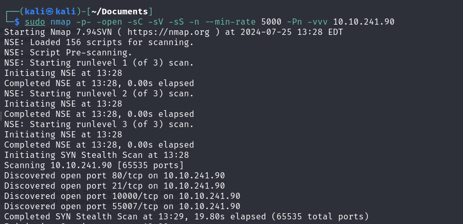

Boiler CTF
First of all, we are going to perform a network scanning, to see what ports are open:
sudo nmap -p- -open -sC -sV -sS -n --min-rate 5000 -Pn -vvv <target_IP> 
Let’s check the website:

We see that it is a website of a default Apache service, so , we are going to check if there are hidden directories on this domain:
fuzz -w <path_to_wordlist> -u <target_IP>/FUZZ 
Since there’s nothing in the hidden directories, we are going to log in to the FTP server, using username Anonymous:

We download the file and we open it:

We see that is readable, so we are going to decrypt it.
As a result, we have the phrase: Just wanted to see if you find it. Lol. Remember: Enumeration is the key!
Now, we are going to check the directory /robots.txt:

We found a series of ASCII numbers that, if we turn to a base64 and MD5, we obtain the string kidding (A waste of time..).
Let’s keep checking stuff:

In the directory /joomla, this nothing relevant at first glance, but we can fuzz the website to find hidden directories within it.

Indeed, we found a large number of hidden directories within the directory /joomla.
We see there is a directory called /_tests, so let’s check it out:

If we search for sar2html on Google, we will find an exploit on Exploit-DB that can be used against it → exploit-db/Sar2HTML (here is the exploit).
The exploit tell us that we can perform a remote command execution ‘RCE’ in the navigation bar due to *plot=*, so let’s test it:

If we use whoami, we see that it tell us we are the user www-data, so let’s list the files and directories to see what we can find:

As we can see, we found several files, the most interesting one is log.txt. If we use plot=;cat log.txt we will obtain a login history:

* After doing that, we can see a username basterd and his password superduperp@$$. Thanks to these credentials, we are able to perform a SSH connection:

Once inside, we see a file called backup.sh. If we open it, we found the directory /home/stoner, which contains the username and his password.
Let’s pivot to that user using su stoner and typing the following password: superduperp@$$no1knows. Now, if we navigate though directories, we find his directory and of course, we can access it.
As a result, we obtain the flag:

Now, we want to find the root flag, which needs root privileges, so we need to find a way to escalate privileges.
To achieve this, first, let’s check if the user stoner can execute binaries using sudo -l :

No luck, so let’s find another way to escalate privileges such as checking the binaries with the SUID bit set:
find / -perm -4000 -type f -ls 2>/dev/null
As a result of the search, we can see that the binary is /find, so if we go to the following website GTFObins-find, we found information on how to run the exploit.
After that, we become a root user, and we have access to that file:

Done, we have found the root_flag. And the challenge is solved.